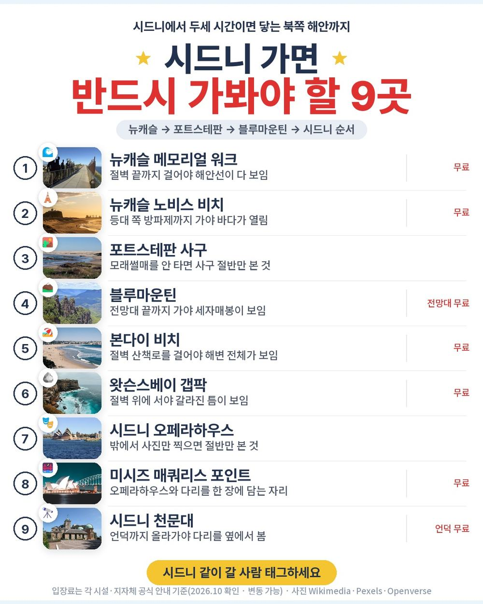
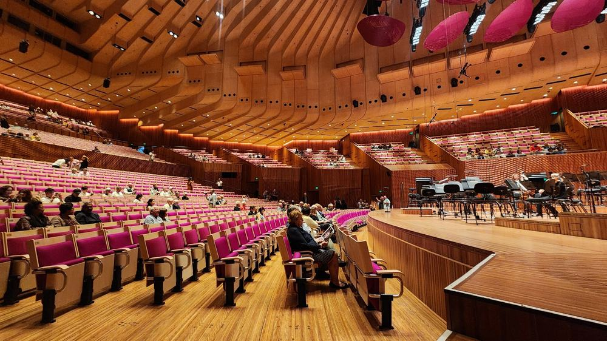
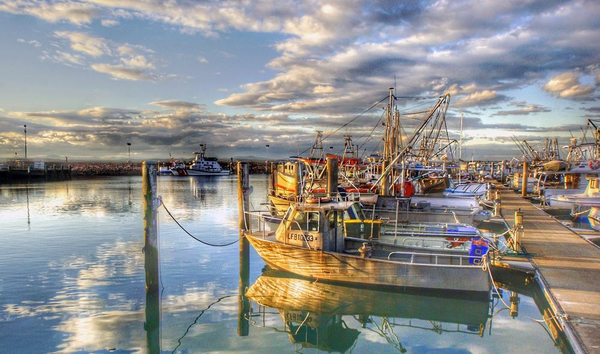
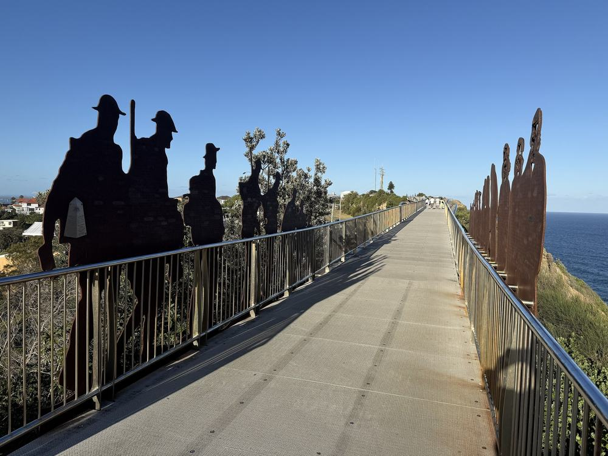
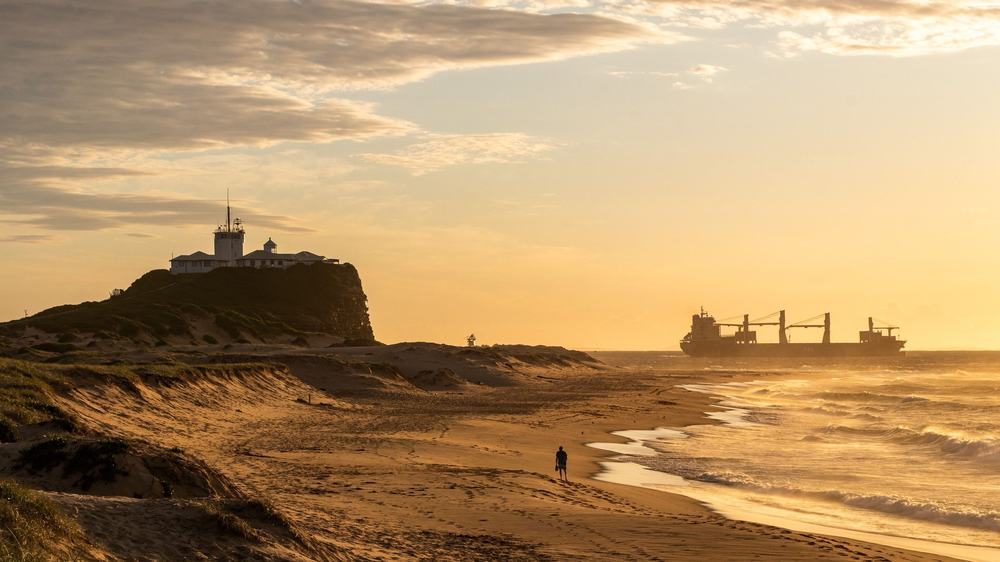
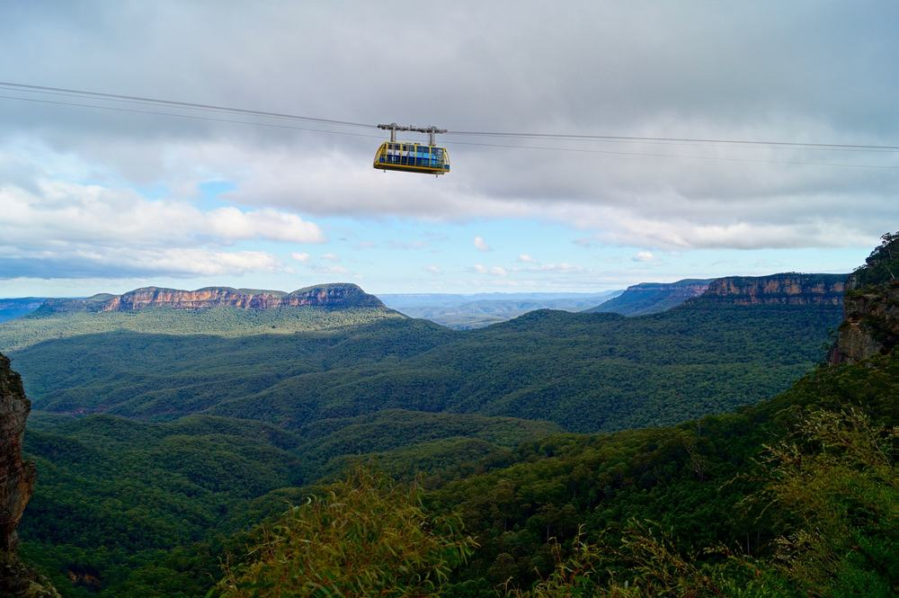
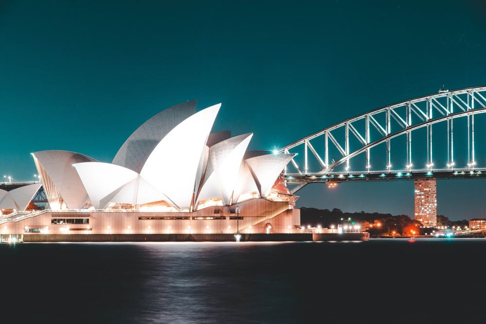
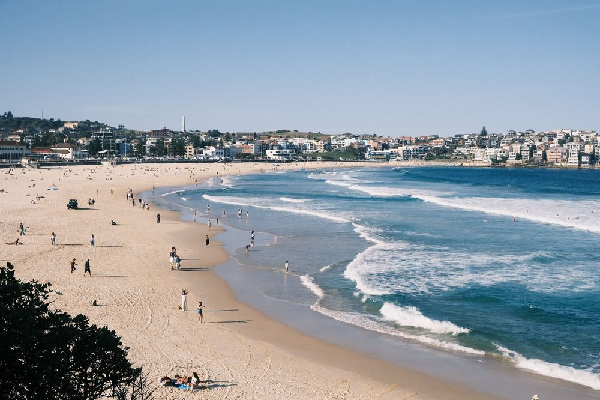

노랑풍선 시드니 패키지 여행 239만 9천원, 오페라하우스 안까지 될까?

호주는 한 번 가려면 비행기만 열 시간이라, 부모님 모시고 갈 거면 제대로 다 보고 와야겠다 싶었음. 그런데 시드니 패키지는 대부분 오페라하우스를 밖에서 보고 끝임.
그러다 노랑풍선 상품이 걸림. 원문 관광 항목에 "오페라하우스 내부관람"이 따로 적혀 있음. 한국어 가이드 투어 30분이고, 포트스테판 사막 투어에 크루즈가 두 번, 선택관광은 하나도 없는 노옵션임.
결론 — 추천. 오페라하우스 내부, 포트스테판 사막·돌고래, 블루마운틴, 뉴캐슬 해안까지 7일에 다 들어 있음. 다만 밤 비행기 뒤 바로 일정이 힘든 분, 쇼핑 3회가 싫은 분, 시내 한복판 호텔을 원하는 분은 아님.
239만 9천원이 그만한 값인지, 현지에서 더 내는 돈은 얼마인지 원문을 뜯어봤음.
| 항목 | 내용 |
|---|---|
| 가격 | 1인 2,399,000원 (2인 1실 기준 · 10월 말 출발) |
| 여행사 | 노랑풍선 |
| 항공 | 아시아나 직항 · 인천 밤 출발 → 시드니 아침 도착 / 귀국은 오전 출발 → 인천 저녁 도착 |
| 숙소 | 준특급(4성) 호텔 5박 · 뉴캐슬 1박 + 시드니 4박 · 호텔명은 출발 1~2일 전 문자 |
| 일정 | 5박 7일 · 전용 버스 · 한국어 가이드 · 식사 15회 · 선택관광 없음 |
| 가는 곳 | 뉴캐슬 · 포트스테판 · 블루마운틴 · 본다이 비치 · 오페라하우스 내부 · 록스 |
▶ 내 출발일 오늘 기준 요금 확인 (제휴 링크 · 예약 시 수수료를 받으며 가격은 같습니다)
| 순서 | 다루는 것 | 한 줄 결론 |
|---|---|---|
| 1 | 구성 뜯어보기 | 노옵션, 현지 추가금은 가이드 경비 70달러 |
| 2 | 일정 살펴보기 | 2일차가 밤 비행기 직후라 제일 고됨 |
| 3 | 자유여행 VS 패키지 | 직접 짜면 285만원 | 패키지가 경비 더해도 35만원쯤 덜 듦 |
1. 구성 뜯어보기
요약 — 항공·준특급 5박·식사 15회·관광 27곳 입장·크루즈 2회·보험이 들어 있음. 선택관광이 없고, 현지에서 내는 건 가이드 경비 70달러와 호주 비자 신청비뿐임. 쇼핑은 3회.
1-1. 239만 9천원에 들어 있는 것

포함 항목을 원문에서 그대로 옮기면 이럼.
- 왕복 항공권 + 유류할증료 + 세금
- 준특급(4성) 호텔 5박 (2인 1실)
- 식사 15회
- 관광지 입장료 — 원문 기준 27곳
- 크루즈 2회 — 포트스테판 돌고래 크루즈, 시드니 선셋 디너 크루즈
- 여행자보험
이 상품의 차별점은 오페라하우스 내부 관람임. 밖에서 사진만 찍는 상품이 많은데, 이건 안으로 들어가 홀을 봄.
출발일별 요금 확인하기
https://naver.me/FetRreM9
1-2. 포트스테판 하루가 통째로 들어 있음

3일차 하루가 포트스테판임. 사륜구동차로 모래 언덕을 넘고, 원문 기준 25m 내리막에서 모래썰매를 탐. 그다음 문쉐도우 크루즈로 야생 돌고래를 찾아 나가고, 와이너리에서 와인 시음하며 점심, 오후엔 코알라·캥거루가 있는 오크베일 동물농장까지 감.
자유여행으로 하면 이게 전부 따로 예약하는 투어임.
1-3. 호텔과 쇼핑

호텔은 준특급(4성), 첫 밤은 뉴캐슬, 나머지 네 밤은 시드니임. 원문 예정 목록이 블랙타운·뱅크스타운·공항 쪽 호텔이라 시내 한복판은 아님. 대신 전 일정 전용 버스라 이동은 신경 쓸 게 없음.
원문 유의사항에 호주 호텔은 일회용품(칫솔·치약 등)이 없고, 와이파이가 없거나 유료인 곳이 많다고 적혀 있음. 세면도구와 데이터는 미리 챙기는 게 좋음.
쇼핑은 3회 — 잡화(화장품·프로폴리스 치약 등), 건강보조식품, 양모임. 사는 건 자유.
1-4. 현장에서 더 낼 돈
| 항목 | 금액 | 비고 |
|---|---|---|
| 가이드·기사 경비 | 약 200,000원 | 1인 70달러 × 2, 현지에서 미국 달러로 |
| 호주 비자(ETA) | 약 40,000원 | 1인 20호주달러 × 2, 휴대폰 앱으로 직접 신청 |
| 선택관광 | 0원 | 노옵션 |
| 싱글룸 쓰면 | 400,000원 | 1인 여행 시 |
| 합계 (2인) | 약 240,000원 | 상품가 479만 8천원 + 24만원 = 약 504만원 |
한 사람으로 치면 약 252만원임. 환율은 1달러 약 1,400원, 1호주달러 약 900원으로 잡았음.
1절 자주 나오는 질문
Q. 선택관광을 현지에서 권하나요?
A. 원문 선택관광 칸이 비어 있는 노옵션 상품임. 일정표의 관광이 전부 상품가에 들어 있음.
Q. 가이드 경비는 따로 내나요?
A. 냄. 1인 70달러를 현지에서 미국 달러로 냄. 개인경비와 매너팁은 별도이고, 매너팁은 자율임.
Q. 출발이 확정된 상품인가요?
A. 원문 출발 상태는 확정이 아님. 최소 6명이 모여야 떠나고, 출발 14~10일 전까지 확정 여부를 알려준다고 적혀 있음.
2. 일정 살펴보기
요약 — 1일차 밤 비행기, 2일차 뉴캐슬 해안, 3일차 포트스테판, 4일차 블루마운틴, 5일차 본다이·선셋 크루즈, 6일차 오페라하우스 내부·록스, 7일차 오전 귀국. 2일차가 기내 1박 직후라 제일 고됨.
2-1. 하루하루 어디를 가나

| 일차 | 가는 곳 | 식사 | 숙소 |
|---|---|---|---|
| DAY 1 | 인천 20:00 출발 | 석 기내식 | 기내 |
| DAY 2 | 시드니 08:20 도착 → 센트럴 코스트 · 케이브스 비치 → 뉴캐슬 대성당 · 노비스 비치 · 메모리얼 워크 | 중 버거·칩스 · 석 스테이크 | 뉴캐슬 |
| DAY 3 | 포트스테판 사막 투어·모래썰매 → 돌고래 크루즈 → 와이너리 → 오크베일 동물농장 → 시드니 | 중 와이너리 · 석 한식 | 시드니 |
| DAY 4 | 블루마운틴 → 루라 마을 → 카툼바 전망 | 중 치킨 슈니첼 · 석 뷔페 | 시드니 |
| DAY 5 | 동부(본다이 · 갭팍) → 해양 박물관 → 시드니 대학교 → 바랑가루 | 중 햄버거 · 석 선셋 디너 크루즈 | 시드니 |
| DAY 6 | 시내 → 오페라하우스 내부 → 록스 → 천문대 | 중 스테이크 · 석 한식 | 시드니 |
| DAY 7 | 시드니 10:20 출발 → 인천 19:00 도착 | 조 도시락 | — |
| 일차 | 버스 이동 | 걷기 | 포함 식사 |
|---|---|---|---|
| DAY 1 | 거의 없음 | 적음 | 석 기내식 |
| DAY 2 | 약 3시간 | 보통 | 조 기내식 · 중 현지식 · 석 현지식 |
| DAY 3 | 약 4시간 | 보통 | 조 호텔식 · 중 현지식 · 석 한식 |
| DAY 4 | 약 3.5시간 | 보통 | 조 호텔식 · 중 현지식 · 석 뷔페식 |
| DAY 5 | 약 1.5시간 | 보통 | 조 호텔식 · 중 현지식 · 석 선상식 |
| DAY 6 | 약 1시간 | 보통 | 조 호텔식 · 중 현지식 · 석 한식 |
| DAY 7 | 약 0.7시간 | 적음 | 조 도시락 · 중 기내식 · 석 기내식 |
| 합계 | 약 13.7시간 | - | 기내식 포함 19끼 (상품 기준 식사 15회) |
요약 — 버스 이동은 7일 동안 약 13.7시간임. 가장 오래 타는 날은 포트스테판에서 시드니로 내려오는 DAY 3(약 4시간)이고, 가장 고된 날은 기내 1박 직후인 DAY 2임.
2-2. 2일차 — 내리자마자 북쪽 해안

아침 8시 20분에 시드니에 내리면 바로 센트럴 코스트로 감. 해식 동굴이 줄지은 케이브스 비치를 보고, 바닷가 바에서 버거와 감자튀김으로 점심. 오후엔 뉴캐슬 언덕 위 크라이스트 처치 대성당, 등대가 선 노비스 비치, 절벽 위 메모리얼 워크를 걸음. 저녁은 스테이크.
기내에서 자고 내린 날이라 이날이 제일 고됨. 대신 하루를 통째로 쓰는 셈임.
2-3. 4일차 — 블루마운틴

시드니에서 버스로 약 두 시간. 19세기 정원 마을 루라를 걷고, 점심은 치킨 슈니첼, 그다음 카툼바 전망대에서 협곡과 세자매봉을 봄.
2-4. 5·6일차 — 시드니

5일차는 동부 해안 본다이 비치와 영화 빠삐용 촬영지 갭팍, 오후엔 해양 박물관·시드니 대학교·바랑가루, 저녁은 항구 위 선셋 디너 크루즈임.
6일차가 하이라이트임. 미시즈 매쿼리스 포인트에서 오페라하우스와 하버브릿지를 한 장에 담고, 오페라하우스 내부로 들어감. 오후엔 1788년 정착이 시작된 돌길 록스와 호주에서 가장 오래된 시드니 천문대 언덕.
2절 자주 나오는 질문
Q. 많이 걷나요?
A. 대부분 보통 수준임. 해안 산책로와 시내 관광이 평지 위주이고, 모래썰매를 탈 때 모래 언덕을 걸어 올라가는 구간이 있음.
Q. 비행기는 몇 시인가요?
A. 아시아나 직항이고, 인천 20:00 출발 → 시드니 08:20 도착, 귀국은 시드니 10:20 출발 → 인천 19:00 도착임(원문 기준).
Q. 11월 시드니 날씨는 어떤가요?
A. 남반구라 봄임. 호주 기상청 기준 11월 시드니 낮 최고 기온이 23도 안팎이고, 자외선이 강해서 모자와 선크림은 꼭 챙기는 게 좋음.
3. 자유여행 VS 패키지 | 직접 짜면 285만원
요약 — 같은 일정을 직접 짜면 1인 285만원쯤 듦. 패키지는 가이드 경비를 더해도 약 250만원이라 35만원쯤 덜 들고, 포트스테판·블루마운틴 투어 예약과 이동까지 맡기는 셈임.
3-1. 같은 일정을 직접 짜면

같은 일정을 혼자 짠다고 치고 항목별로 계산해 봄. 10월 말 출발, 2인 1실 1인분임. 항공 말고는 추정치라 근거 열에 적어 둠.
| 항목 | 금액 | 근거 |
|---|---|---|
| 인천–시드니 왕복 항공 | 1,307,780원 | 패키지와 같은 출발일 직항 (2026-10-04 마이리얼트립 조회) |
| 4성 호텔 5박 | 575,000원 | 2인 1실 1박 약 23만원의 1인분 × 5 (추정) |
| 식사 15회 | 450,000원 | 스테이크 2회·선상 디너·와이너리 점심 포함 (추정) |
| 포트스테판 1일 투어 | 230,000원 | 사막 투어·모래썰매·돌고래 크루즈·와이너리 (추정) |
| 블루마운틴 1일 투어 | 150,000원 | 왕복 이동 포함 (추정) |
| 오페라하우스 내부 투어 | 40,000원 | 가이드 투어 1회 (추정) |
| 공항 ↔ 시내·뉴캐슬 이동 | 80,000원 | 공항 왕복 + 뉴캐슬 오가는 교통 (추정) |
| 여행자보험 | 15,000원 | 7일 기준 |
| 가이드 | — | 자유여행은 없음 |
| 합계 | 약 2,848,000원 |
직접 짜실 분은 이 날짜 항공권부터 보세요 — https://myrealt.rip/tygr30 (마이리얼트립 제휴 링크)
패키지는 2,399,000원에 가이드 경비 70달러(약 10만원)와 비자 신청비(약 2만원)를 더해 약 252만원임.
3-2. 그래서 뭐가 다른가
같은 날 직항 항공권만 130만원이 넘음. 그 위에 호텔·식사·투어를 얹으면 패키지보다 비싸짐.
- 시드니 → 뉴캐슬 → 포트스테판 → 시드니, 시드니 → 블루마운틴 → 시드니
- 자유여행이면 이 구간이 전부 렌터카나 투어 예약임
- 선셋 디너 크루즈·오페라하우스 내부 투어도 날짜 맞춰 따로 잡아야 함
패키지는 이 전부가 전용 버스 한 대로 붙고, 한국어 가이드가 붙음. 자유여행 계산표에 가이드 행이 비어 있는 게 그 뜻임 — 0원이 아니라 살 수 없는 것임.
3-3. 어느 쪽이 맞나
| 자유여행이 맞음 | 패키지가 맞음 |
|---|---|
| 시드니 시내만 천천히 볼 것임 | 포트스테판·블루마운틴·뉴캐슬까지 다 볼 것임 |
| 해외 운전이 편함 | 호주 왼쪽 운전·장거리 이동이 부담 |
| 시내 한복판 호텔이 중요함 | 호텔 위치보다 일정이 중요함 |
| 쇼핑 일정이 싫음 | 쇼핑 3회는 괜찮음 |
3절 자주 나오는 질문
Q. 자유여행이 더 싸지 않나요?
A. 계산해 보면 자유여행이 약 285만원, 패키지가 경비 포함 약 252만원임. 같은 날 직항만 130만원이 넘어서 이번엔 패키지가 덜 듦.
Q. 혼자 가도 되나요?
A. 됨. 다만 싱글룸 사용료 40만원이 붙음.
Q. 아이와 같이 가도 되나요?
A. 원문 요금은 소아(만 12세 미만) 2,299,000원, 유아(24개월 미만) 400,000원임.
마무리
정리하면 이럼.
추천함. 239만 9천원에 아시아나 직항, 준특급 호텔 5박, 식사 15회, 오페라하우스 내부, 포트스테판 사막·돌고래, 블루마운틴, 뉴캐슬 해안, 크루즈 2회가 들어 있음. 선택관광이 없고, 현지에서 더 내는 건 가이드 경비 70달러와 비자 신청비임.
이런 분은 고르면 안 됨. 밤 비행기 뒤 바로 일정이 힘든 분, 쇼핑 3회가 싫은 분, 시내 한복판 호텔을 원하는 분.
걸리는 점이 있긴 한데 상품 흠이라기보다 맞는 사람과 안 맞는 사람을 가르는 조건에 가까움.
오늘 기준 출발일별 요금 보기
https://naver.me/FetRreM9
함께 보면 좋은 글
참좋은여행 오사카 패키지 여행 114만 9천원, 추가금 진짜 없을까?
https://blog.naver.com/robotnady10/224430046259
노랑풍선 후쿠오카 패키지 여행 79만 9천원, 온천에 대게 무제한까지 될까?
https://blog.naver.com/robotnady10/224428993076
이 글에는 네이버·마이리얼트립 제휴 링크가 포함되어 있으며, 링크를 통해 예약하시면 일정 수수료를 받습니다. 가격은 동일합니다. 가격과 구성은 2026년 10월 4일 확인 기준이며 출발일에 따라 달라질 수 있습니다.
▶ 이 상품, 영상으로 보기 (유튜브)
▶ 시드니 패키지 오늘 값 나란히 비교